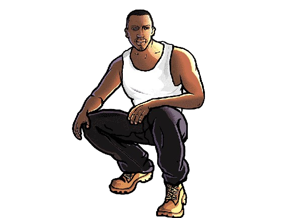
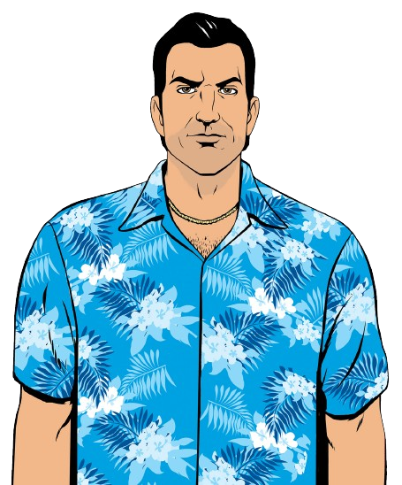

Gta V

"Grand Theft Auto V" (GTA V) is an action-adventure game developed by Rockstar North. Released in 2013, it features an expansive open-world set in the fictional state of San Andreas. The story revolves around three protagonists—Michael, a retired bank robber; Franklin, a young repo man; and Trevor, a volatile ex-military pilot. As they navigate the criminal underworld, players engage in heists, missions, and explore the vast and immersive city of Los Santos. GTA V is renowned for its compelling narrative, intricate gameplay, and detailed open-world environment, making it one of the most successful games in the Grand Theft Auto series.
Gta San Andreas
"Grand Theft Auto: San Andreas" (GTA San Andreas) is an action-adventure game developed by Rockstar North. Released in 2004, it is set in the fictional state of San Andreas, which comprises three cities inspired by real-life locations. The game follows Carl "CJ" Johnson, who returns to his hometown of Los Santos after the murder of his mother. CJ gets entangled in gang conflicts, corrupt cops, and political conspiracies. As players explore the vast open-world, they can engage in missions, customize CJ's appearance, and immerse themselves in the iconic '90s hip-hop culture. GTA San Andreas is celebrated for its expansive world, diverse gameplay, and memorable characters, making it a classic in the Grand Theft Auto series.
Gta Vice City
"Grand Theft Auto: Vice City" (GTA Vice City) is an action-adventure game developed by Rockstar North. Released in 2002, it is set in the fictional Vice City, a vibrant and fictional representation of Miami in the 1980s. The story follows Tommy Vercetti, a former mobster, as he rises through the criminal underworld after a drug deal goes awry. Players navigate Vice City's neon-soaked streets, engage in missions, and build a criminal empire. With a captivating narrative, an iconic '80s soundtrack, and a nostalgic atmosphere, GTA Vice City is praised as a classic in the Grand Theft Auto series.